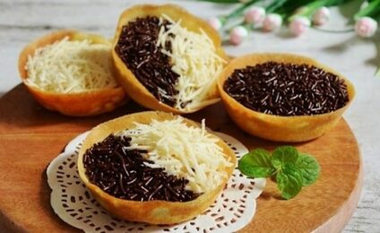

Martabak Mini
Bahan:
- 250 gram Tepung Terigu
- 5 sdm Gula Pasir
- 2 sdm Susu Bubuk
- 1 butir Telur
- 1 sdt Fermipan / Ragi Instan
- 1 sdt Soda Kue
- 350-400 ml Air Matang
- Secukupnya Garam
- Secukupnya Vanilli
- Topping : (sesuai selera)
- Meises
- Keju
- skm
- Margarin
Cara Membuat:
- Pertama kita buat bahan biangnya dulu. Campurkan Ragi, 1 sdm Gula Pasir dan 3 sdm air hangat kedalam gelas, aduk rata dan tutup tunggu hingga berbuih.
- Sambil menunggu, campurkan Tepung Terigu, Susu, Gula Pasir, Vanilli dan Garam. Mixer dg kecepatan rendah sambil tuang air sedikit2 hingga tercampur rata dan tidak bergerendil.
- Kalau sudah rata, tambahkan telur kemudian mixer lagi selama 5 menit.
- Kemudian tambahkan Soda Kue dan bahan biang tadi. Aduk hingga benar2 rata. Lalu istirahatkan adonan selama 45 menit hingga keluar buih2. Jangan lupa ditutup dengan serbet bersih.
- Panaskan cetakan martabak hingga benar2 panas dengan api yg kecil saja. Olesi cetakan dg margarin agar tidak lengket.
- Tuang adonan sebanyak 1 sendok sayur atau 3/4 dari cetakan kemudian tekan2 untuk membuat pinggiran. Tunggu hingga keluar rongga2 kemudian taburi Gula Pasir dan tutup.
- Kalau adonan sudah berubah warna (tidak ada adonan mentah yg warna putih) tanda nya martabak sudah matang. Kemudian angkat.
- Olesi dengan margarin dan beri topping sesuai selera.